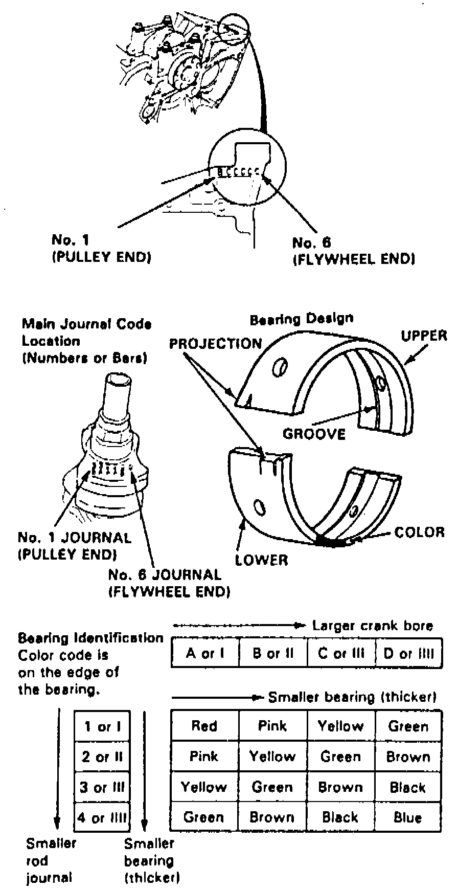
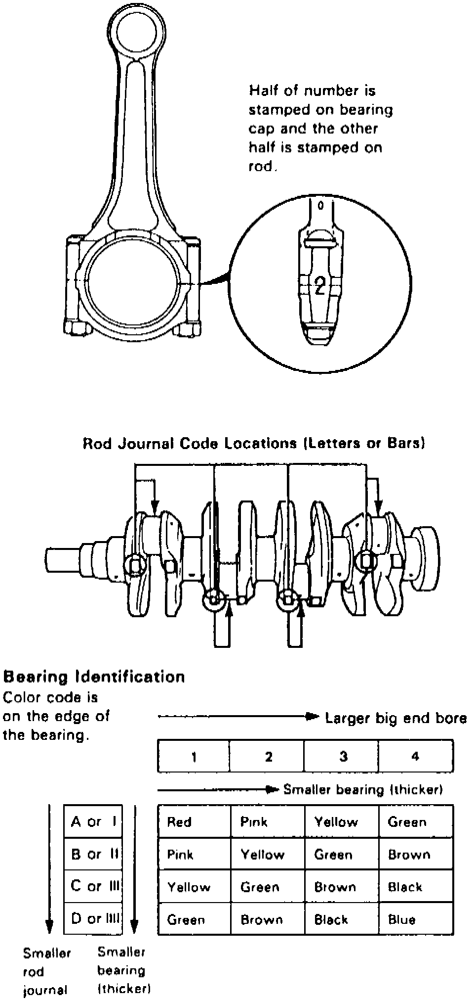

Connecting Rod: Service and Repair
Fig. 80 Main Bearing Identification:

Marks are stamped on the end of the engine block as a code for each main journal bore, Fig. 80. Use these marks in conjunction with numbers stamped on crankshaft to select correct bearings.
Fig. 83 Connecting Rod Bearing Identification:

Numbers are stamped on the side of each connecting rod to code the size of the large end. Use these numbers in conjunction with letters stamped on crankshaft, Fig. 83, to select correct bearings.
Torque main bearing cap bolts in two steps: first to 22 ft. lbs., then to 49 ft. lbs.